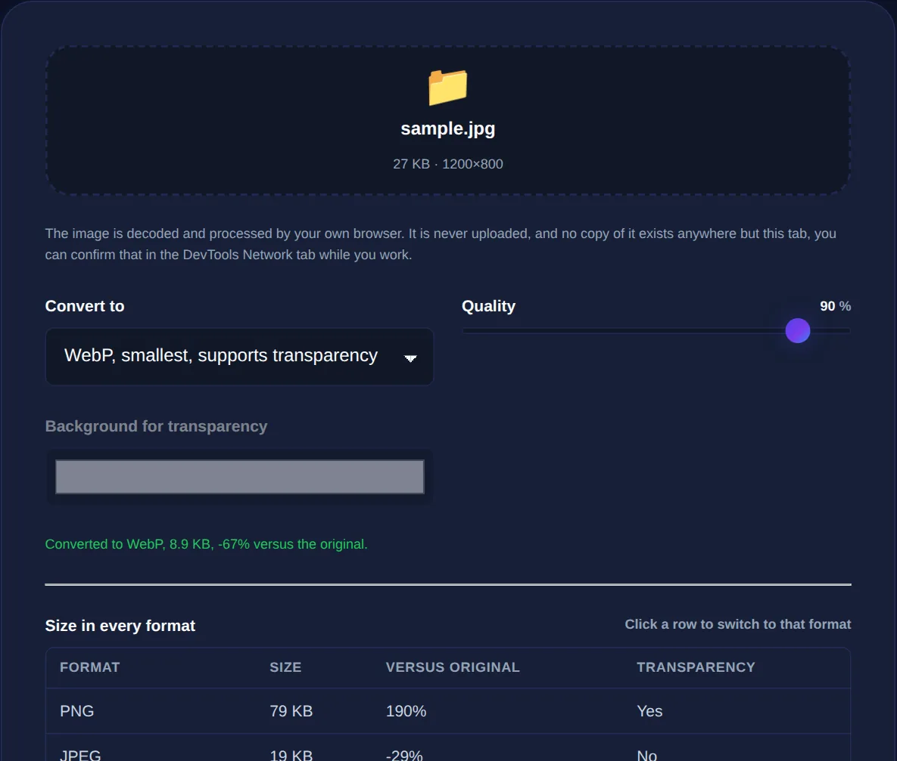

PNG, JPG, WebP: How to Convert Between Image Formats
What actually happens when you convert an image, which conversions are safe, and how to pick the destination format for the job.
By Mubasher Hussain · Published 2026-07-29 · Updated 2026-09-01 · 1041 words · about 5 minute read
Converting an image format means re-encoding the same picture using a different set of rules, turning a PNG into a JPG, a JPG into a WebP, and so on. Each format stores images differently, with its own strengths around quality, file size and transparency, so the format you choose has real consequences. The Image Format Converter handles these conversions in your browser, and this article explains what each conversion actually does and how to pick the right destination.
The key idea is that converting is not neutral: some conversions are lossless and reversible, while others permanently change the image. Knowing which is which prevents nasty surprises like a logo that suddenly has a white box behind it.
What the main formats are good at
Each common web format exists because it solves a particular problem well:
- JPG (JPEG): excellent for photographs. Lossy, small files, but no transparency and visible artefacts on sharp edges and text.
- PNG: excellent for graphics, logos, screenshots and anything needing transparency. Lossless and crisp, but large for photos.
- WebP: a modern format that does both jobs well, offering smaller files than JPG and PNG at similar quality, with transparency support.
- GIF: limited to 256 colours; now used mainly for simple animations rather than still images.

What happens to quality when you convert
The critical distinction is whether the destination format is lossy or lossless. Converting a photo to JPG or WebP applies lossy compression, discarding some data, fine once, but converting repeatedly (JPG to JPG to JPG) compounds the loss and visibly degrades the image, a problem known as generation loss. Converting to PNG is lossless, so it never degrades, but it cannot recover detail already lost by an earlier lossy step. The safe habit: keep a lossless master (PNG or the original) and export lossy copies from it, rather than re-saving lossy files over and over.
PNG and WebP support transparent backgrounds; JPG does not. Convert a transparent PNG logo to JPG and the transparent areas turn solid, usually white or black. If your image relies on transparency, convert only to PNG or WebP, never to JPG.
Which conversion should you choose?
Match the destination to the goal:
- PNG to JPG: shrink a photo that was needlessly saved as PNG, but only if it has no transparency.
- JPG to WebP: cut file size further for the web while keeping the same visual quality.
- PNG to WebP: keep transparency and sharp edges while getting a much smaller file.
- WebP to PNG or JPG: for compatibility with older software that does not read WebP.
For the modern web, WebP is usually the best destination because it combines small size with transparency support. For maximum compatibility or archival, keep a PNG or the original.
Convert, resize and compress together
Format conversion is most powerful combined with the other image operations. A common optimisation is to resize an oversized image to the dimensions it will actually be displayed at, convert it to WebP, and compress it, three steps that together can turn a five-megabyte photo into a sub-hundred-kilobyte file that looks identical on screen. Use the image resizer and image compressor alongside the converter to get there.
Convert images between PNG, JPG and WebP in your browser, with control over quality and transparency. Your image is never uploaded.
Doing it privately, without an upload
Many format-conversion sites require you to upload your image to their servers, process it, and download it back, which means a copy of your picture now sits on someone else's machine. A browser-based converter uses the image engine already in your browser to re-encode the file locally, so the conversion is instant and the image never leaves your device. That matters as much for a confidential screenshot or a client's artwork as it does for a holiday photo.
Browser support and choosing a safe default
Format choice is partly about quality and partly about who can open the file. For years JPG and PNG were the safe universal choices because every browser, email client and operating system understood them. WebP is now supported across all current major browsers, which is why it has become the sensible default for the web, but older software and some legacy systems still stumble on it. That is the practical reason to keep a JPG or PNG version around even when you serve WebP: it is your compatibility fallback for anything that cannot read the newer format.
A reliable default strategy looks like this. For photographs on the web, serve WebP with a JPG fallback. For graphics, logos and anything with transparency, use PNG or WebP, never JPG. For images that must open anywhere with zero risk, an attachment to a stranger, a file for an unknown system, plain JPG or PNG remains the safest currency. And always keep your original or a lossless master untouched, because it is the source you will re-export from as formats and requirements change over the years. Converting is cheap; recovering detail lost to a bad conversion is impossible.
It is also worth remembering that converting never improves an image, at best it preserves what is there, and at worst it degrades it. If you receive a heavily compressed JPG, converting it to PNG will not restore the detail already lost; it will simply store the flawed version losslessly, in a larger file. The quality ceiling is set by the original capture and every lossy step since. This is why keeping the earliest, highest-quality version you have, ideally straight from the camera or design tool, is the single best thing you can do for image quality over the long run.
To sum up: converting formats re-encodes your image under new rules, so choose the destination deliberately. Keep a lossless master, avoid repeatedly re-saving lossy files, never convert a transparent image to JPG, and prefer WebP for the web. Get those right and format conversion becomes a reliable way to make images smaller, more compatible, or more capable, without unpleasant surprises.